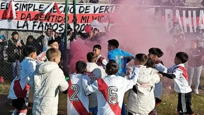

El Semillero de River: La Cantera Más Grande de América
Desde los orígenes hasta la actualidad
River Plate no solo es grande por sus títulos, sino también por su incomparable capacidad para formar jugadores de talla mundial. El "Semillero" es reconocido como la cantera más importante de América, forjando talentos desde las divisiones inferiores hasta el primer equipo.

El Método River
La formación en River se basa en:
Formación integral: Desarrollo técnico, táctico, físico y psicológico
Filosofía de juego: Estilo ofensivo y posesivo desde las categorías infantiles
Valores institucionales: Disciplina, compromiso y sentido de pertenencia
Preparación académica: Apoyo escolar y seguimiento educativo
Jugadores destacados
Leyendas Históricas
Alfredo Di Stéfano
Considerado uno de los mejores de la historia
Amadeo Carrizo
Revolucionó el puesto de arquero
Omar Sívori
Crack de la delantera, Balón de Oro 1961
Daniel Passarella
Capitán campeón del mundo 1978
Norberto Alonso
Ídolo máximo, "Beto" para la hinchada
Ramón Díaz
Goleador histórico y luego técnico
Ídolos de los 90
Ariel Ortega
"El Burrito", ídolo de los 90
Marcelo Gallardo
Jugador clave y técnico legendario
Pablo Aimar
El "Payasito", mago del mediocampo
Javier Saviola
"El Conejo", goleador nato
Generación 2000-2010
Gonzalo Higuaín
Goleador en Europa y selección
Radamel Falcao García
"El Tigre", goleador implacable
Fernando Cavenaghi
Goleador nato, ídolo de River
Erik Lamela
Destacado en Europa
Nuevas Joyas (2010-Presente)
Julián Álvarez
Campeón del mundo 2022
Enzo Fernández
Mejor joven del Mundial 2022
Exequiel Palacios
Mediocampista en Bayer Leverkusen
Claudio Echeverri
"El Diablito", nueva joya del semillero
Franco Mastantuono
Joven promesa de la cantera
Agustín Ruberto
Goleador de las inferiores
La cantera hoy
El predio "River Camp" en Ezeiza es un centro de alto rendimiento con:
12 canchas de juego (7 de césped natural y 5 sintéticas)
Gimnasio de última generación
Residencia para jugadores del interior
Laboratorios de análisis de rendimiento
Sala de videoconferencias para análisis táctico
Datos destacados
Más de 300 jugadores formados en River jugaron en primera división
50 jugadores surgidos del semillero fueron campeones del mundo
River es el club con más jugadores formados en la historia de la Selección Argentina
El 70% del plantel profesional actual surgió de las inferiores
Legado
El Semillero no solo produce futbolistas, sino que: